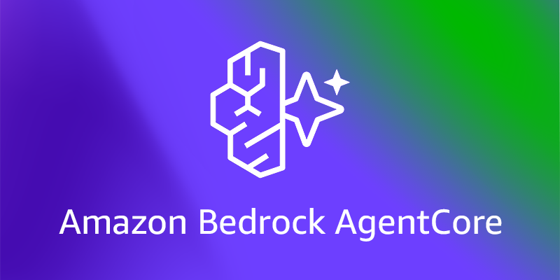
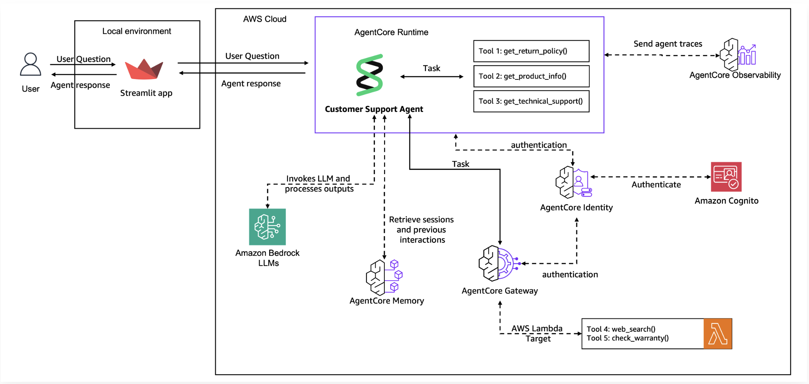
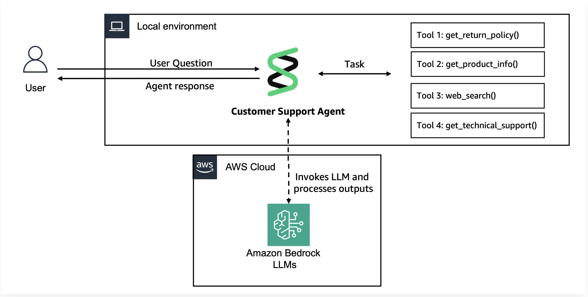
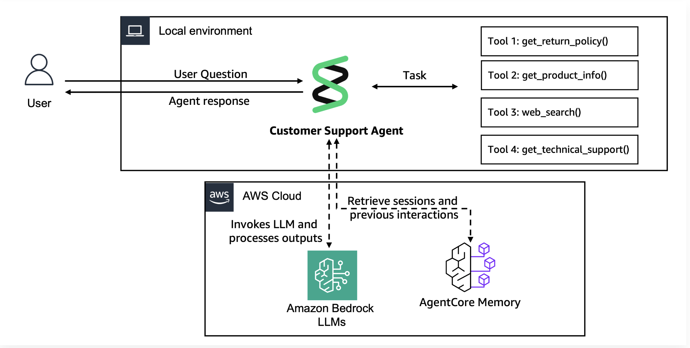

Building a Customer Support Agent Using Amazon BedRock AgentCore

Project Goal
This project is part of the AWS Users Group Workshop on 17th September, 2025. The goal of the project is to build a comprehensive, production ready Customer Support Agent using Amazon BedRock AgentCore.
Business Scenario
You work for TechCorp, an e-commerce company that receives hundreds of customer support requests daily.
Customers contact support for various reasons:- Product Information: Getting specifications, pricing, and availability details
- Policy Questions: Understanding return policies, shipping costs, and business hours
Currently, your support team spends significant time on repetitive tasks, leading to longer wait times and higher operational costs. You need an AI solution that can handle routine inquiries while escalating complex cases to human agents.
Concepts to know
Amazon Bedrock AgentCore
A fully managed service that enables you to deploy and operate highly capable AI agents securely at scale. AgentCore services can be used together or independently and work with any framework including Strands Agents, LangGraph, CrewAI, and LlamaIndex, as well as any foundation model in or outside of Amazon Bedrock, giving you the ultimate flexibility. It serves developers and enterprises who need 1) robust, secure, and scalable infrastructure to support dynamic execution paths at runtime, 2) controls to monitor behavior, 3) powerful tools to enhance agents, and 4) the flexibility to adapt as the landscape evolves.
Model Context Protocol (MCP)
An open-spourced standard for connecting AI applications to external systems. Using MCP, AI applications like Claude or ChatGPT can connect to data sources (e.g. local files, databases), tools (e.g. search engines, calculators) and workflows (e.g. specialized prompts)—enabling them to access key information and perform tasks. Think of MCP like a USB-C port for AI applications. Just as USB-C provides a standardized way to connect electronic devices, MCP provides a standardized way to connect AI applications to external systems. Another standardized protocol is called Agent2Agent (A2A).
Strands Agent
Strands Agents is a simple-to-use, code-first framework for building agents. With Strands, developers can simply define a prompt and a list of tools in code to build an agent, then test it locally and deploy it to the cloud. Like the two strands of DNA, Strands connects two core pieces of the agent together: the model and the tools. Strands plans the agent’s next steps and executes tools using the advanced reasoning capabilities of models. For more complex agent use cases, developers can customize their agent’s behavior in Strands. For example, you can specify how tools are selected, customize how context is managed, choose where session state and memory are stored, and build multi-agent applications. Strands can run anywhere and can support any model with reasoning and tool use capabilities, including models in Amazon Bedrock, Anthropic, Ollama, Meta, and other providers through LiteLLM.
Architecture Overview

Lab 1
In this lab, we will build a basic Customer Support Agent prototype using Strands Agents. This agent will have the following local tools available:
Jupyter Notebook
| Tool Function | Description |
|---|---|
get_return_policy()
|
Get return policy for specific products |
get_product_info()
|
Get product information |
web_search()
|
Search web for updated product information |
- Create tools using the @tool decorator
- Initialize a Strands Agent with model and tools
- Test Agent locally in a Jupyter Notebook
Architecture for Lab 1

Step 1: Create Customer Support Tools
To provide more capabilities to the Agent, we can build specialized functions that can interact with external systems and data sources. Each tool represents a specific capability that allows the agent to take actions in the real world, from looking up orders to checking policies.
Lab 2
This lab focuses on enhancing an agent with memory. The reality for most AI agents today: Every conversation starts from zero, creating:- Frustrated customers who must repeat their information repeatedly
- Inefficient support that cannot build on previous interactions
- Lost opportunities to provide personalized, proactive service
- Poor customer satisfaction due to impersonal, generic responses
- Short-Term Memory: Immediate conversation context and session-based information that provides continuity within a single interaction or closely related sessions.
- Long-Term Memory: Persistent information extracted and stored across multiple conversations, including facts, preferences, and summaries that enable personalized experiences over time.
- “Welcome back, Sarah!” - Instantly recognizes returning customers
- “I remember you prefer email updates” - Recalls individual preferences automatically
- “Following up on your laptop issue from last month” - Connects related conversations seamlessly
- “Based on your purchase history, here’s what I recommend” - Provides personalized suggestions
Architecture for Lab 2

Step 1: Create AgentCore Memory Resources
Our first step (This is a one-time setup) is to create a managed agentcore memory resource with multiple strategies (USER_PREFERENCE and SEMANTIC) to store comprehensive customer context, enabling persistent recall across conversations and balanced behavioral/factual insights.